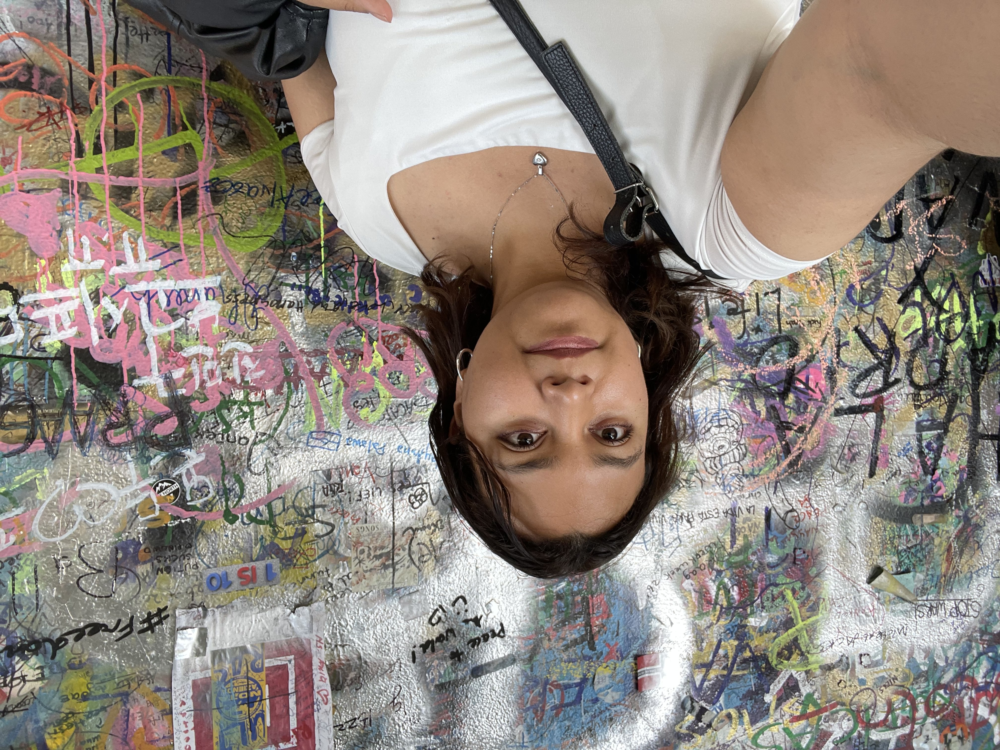

Ik ben Daniela, een creatieve student met een sterke interesse in digitale vormgeving en communicatie. Ik werk graag aan projecten waarin beeld, cultuur en verhalen samenkomen. Door mijn ervaring als stadsgids ontdekte ik hoe boeiend ik het vind om mensen op een visuele en toegankelijke manier kennis te laten maken met Antwerpen. In de toekomst wil ik mij verder ontwikkelen binnen communicatie, citymarketing, toerisme en cultuur.
Ik ben nieuwsgierig, leergierig en zoek steeds naar creatieve werkwijzen die bij mij passen.
